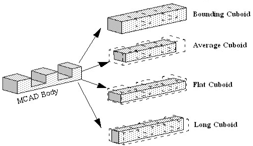
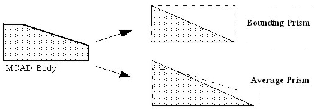
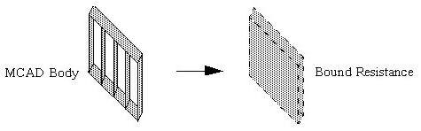

Replacing With a Single Object
Use this method
to replace a selected MCAD Body with a single Simcenter Flotherm primitive or SmartPart.
Procedure
- Alternatively, select a part
or body and right-click to display the context-sensitive menu, see Figure 1.Figure 1. Single Object Context-Sensitive Menu Options

Results
The data tree will display the relevant Simcenter Flotherm icon for the replacement. Primitives are displayed in dark blue and SmartParts are displayed in dark green in the GDA.
Figure 2, Figure 3 and Figure 4 show some examples of simplifying an MCAD Part to a single Simcenter Flotherm object.
Figure 2. Replacement Cuboids

Figure 3. Replacement Prisms

Figure 4. Replacement Resistance
